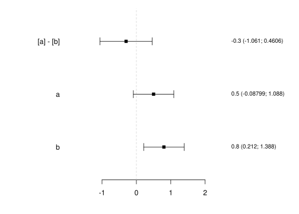
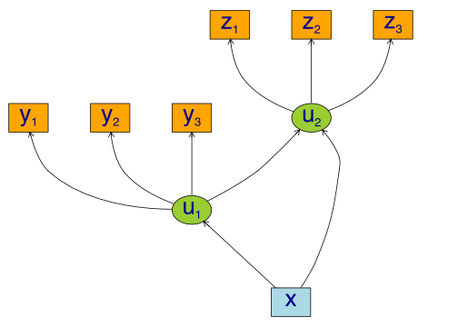
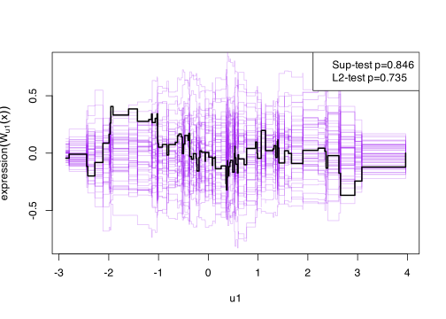
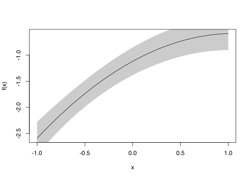
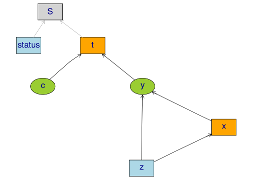
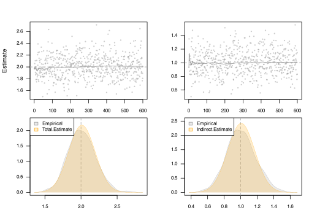

A general implementation of Structural Equation Models with latent variables (MLE, 2SLS, and composite likelihood estimators) with both continuous, censored, and ordinal outcomes (Holst and Budtz-Joergensen (2013) doi:10.1007/s00180-012-0344-y). Mixture latent variable models and non-linear latent variable models (Holst and Budtz-Joergensen (2020) doi:10.1093/biostatistics/kxy082). The package also provides methods for graph exploration (d-separation, back-door criterion), simulation of general non-linear latent variable models, and estimation of influence functions for a broad range of statistical models.
Installation
install.packages("lava", dependencies=TRUE)
library("lava")
demo("lava")For graphical capabilities the Rgraphviz package is needed (first install the BiocManager package)
# install.packages("BiocManager")
BiocManager::install("Rgraphviz")or the igraph or visNetwork packages
install.packages("igraph")
install.packages("visNetwork")The development version of lava may also be installed directly from github:
# install.packages("remotes")
remotes::install_github("kkholst/lava")Citation
To cite that lava package please use one of the following references
Klaus K. Holst and Esben Budtz-Joergensen (2013). Linear Latent Variable Models: The lava-package. Computational Statistics 28 (4), pp 1385-1453. http://dx.doi.org/10.1007/s00180-012-0344-y
@article{lava,
title = {Linear Latent Variable Models: The lava-package},
author = {Klaus Kähler Holst and Esben Budtz-Jørgensen},
year = {2013},
volume = {28},
number = {4},
pages = {1385-1452},
journal = {Computational Statistics},
doi = {10.1007/s00180-012-0344-y}
}Klaus K. Holst and Esben Budtz-Jørgensen (2020). A two-stage estimation procedure for non-linear structural equation models. Biostatistics 21 (4), pp 676-691. http://dx.doi.org/10.1093/biostatistics/kxy082
Examples
Influence functions
Construct estimate objects from parameter coefficients and estimated influence functions
a <- estimate(coef=c("a"=0.5), IC=rnorm(10), id=1:10)
b <- estimate(coef=c("b"=0.8), IC=rnorm(10), id=6:15)Alternatively, we can construct estimate objects directly from an existing model object (glm(), mets::phreg(), targeted::cate(), …)
estimate(modelobj, id, ...)We can now merge the estimate objects to obtain their joint distribution via their estimated influence functions
e <- c(a, b)
vcov(e) # joint distribution
#> a b
#> a 0.1023667491 0.0001747415
#> b 0.0001747415 0.0625808426
summary(e, null=c(0, 0))
#> Call: estimate.default(contrast = as.list(seq_along(p)), null = ..1,
#> vcov = vcov(object, messages = 0), coef = p)
#> ────────────────────────────────────────────────────────────
#> Estimate Std.Err 2.5% 97.5% P-value
#> a 0.5 0.3199 -0.1271 1.127 0.118111
#> b 0.8 0.2502 0.3097 1.290 0.001384
#> ────────────────────────────────────────────────────────────
#> Null Hypothesis:
#> [a] = 0
#> [b] = 0
#>
#> chisq = 12.6472, df = 2, p-value = 0.001793Parameter transformations can be calculated directly as in the following examples.
Products
a * b
#> Estimate Std.Err 2.5% 97.5% P-value
#> a 0.4 0.2851 -0.1588 0.9588 0.1607General transformations
(3 * cos(a) / sqrt(b) + 1) / a^2
#> Estimate Std.Err 2.5% 97.5% P-value
#> a 15.77 22.33 -27.98 59.53 0.4798Inner product, sums, and products
c(iprod=e %*% c(a, b^2), sum=sum(e), prod=prod(e))
#> Estimate Std.Err 2.5% 97.5% P-value
#> iprod 0.762 0.5777 -0.3703 1.8943 0.187160
#> ─────
#> sum 1.300 0.4066 0.5031 2.0969 0.001386
#> ─────
#> prod 0.400 0.2851 -0.1588 0.9588 0.160658Exponentiation and renaming of parameter
c(pow = a^b)
#> Estimate Std.Err 2.5% 97.5% P-value
#> pow 0.5743 0.3102 -0.03368 1.182 0.06411Transformation and subsetting
c(e["a"] * e["b"] / a, e["b"])
#> Estimate Std.Err 2.5% 97.5% P-value
#> a 0.8 0.2502 0.3097 1.29 0.001384
#> ─
#> b 0.8 0.2502 0.3097 1.29 0.001384For the %*%* operator we can also use a general contrast matrix
B <- rbind(c(1,-1), c(1,0), c(0,1))
B %*% e
#> Estimate Std.Err 2.5% 97.5% P-value
#> [a] - [b] -0.3 0.4057 -1.0952 0.4952 0.459634
#> [a] 0.5 0.3199 -0.1271 1.1271 0.118111
#> [b] 0.8 0.2502 0.3097 1.2903 0.001384
#>
#> Null Hypothesis:
#> [a] - [b] = 0
#> [a] = 0
#> [b] = 0
#>
#> chisq = 12.6472, df = 2, p-value = 0.001793
plot(B %*% e)
Structural Equation Model
Specify structural equation models with two factors
m <- lvm()
regression(m) <- y1 + y2 + y3 ~ u1
regression(m) <- z1 + z2 + z3 ~ u2
latent(m) <- ~ u1 + u2
regression(m) <- u2 ~ u1 + x
regression(m) <- u1 ~ x
plot(m)
Simulation
d <- sim(m, 100, seed=1)Estimation
e <- estimate(m, d)
e
#> Estimate Std. Error Z-value P-value
#> Measurements:
#> y2~u1 0.95462 0.08083 11.80993 <1e-12
#> y3~u1 0.98476 0.08922 11.03722 <1e-12
#> z2~u2 0.97038 0.05368 18.07714 <1e-12
#> z3~u2 0.95608 0.05643 16.94182 <1e-12
#> Regressions:
#> u1~x 1.24587 0.11486 10.84694 <1e-12
#> u2~u1 0.95608 0.18008 5.30910 1.102e-07
#> u2~x 1.11495 0.25228 4.41951 9.893e-06
#> Intercepts:
#> y2 -0.13896 0.12458 -1.11537 0.2647
#> y3 -0.07661 0.13869 -0.55241 0.5807
#> u1 0.15801 0.12780 1.23644 0.2163
#> z2 -0.00441 0.14858 -0.02969 0.9763
#> z3 -0.15900 0.15731 -1.01076 0.3121
#> u2 -0.14143 0.18380 -0.76949 0.4416
#> Residual Variances:
#> y1 0.69684 0.14858 4.69004
#> y2 0.89804 0.16630 5.40026
#> y3 1.22456 0.21182 5.78109
#> u1 0.93620 0.19623 4.77084
#> z1 1.41422 0.26259 5.38570
#> z2 0.87569 0.19463 4.49934
#> z3 1.18155 0.22640 5.21883
#> u2 1.24430 0.28992 4.29195Model assessment
Assessing goodness-of-fit, here the linearity between u2 and u1 (requires the gof package)
# install.packages("gof", repos="https://kkholst.github.io/r_repo/")
library("gof")
set.seed(1)
g <- cumres(e, u2 ~ u1)
plot(g)
Non-linear measurement error model
Simulate non-linear model
m <- lvm(y1 + y2 + y3 ~ u, u ~ x)
transform(m,u2 ~ u) <- function(x) x^2
regression(m) <- z~u2+u
d <- sim(m,200,p=c("z"=-1, "z~u2"=-0.5), seed=1)Stage 1:
m1 <- lvm(c(y1[0:s], y2[0:s], y3[0:s]) ~ 1*u, u ~ x)
latent(m1) <- ~ u
(e1 <- estimate(m1, d))
#> Estimate Std. Error Z-value P-value
#> Regressions:
#> u~x 1.06998 0.08208 13.03542 <1e-12
#> Intercepts:
#> u -0.08871 0.08753 -1.01344 0.3108
#> Residual Variances:
#> y1 1.00054 0.07075 14.14214
#> u 1.19873 0.15503 7.73233Stage 2
pp <- function(mu,var,data,...) cbind(u=mu[,"u"], u2=mu[,"u"]^2+var["u","u"])
(e <- measurement.error(e1, z~1+x, data=d, predictfun=pp))
#> Estimate Std.Err 2.5% 97.5% P-value
#> (Intercept) -1.1181 0.13555 -1.3838 -0.8524 1.602e-16
#> x -0.0537 0.14361 -0.3352 0.2278 7.085e-01
#> u 1.0039 0.12651 0.7560 1.2519 2.093e-15
#> u2 -0.4718 0.05858 -0.5867 -0.3570 7.974e-16
f <- function(p) p[1]+p["u"]*u+p["u2"]*u^2
u <- seq(-1, 1, length.out=100)
plot(e, f, data=data.frame(u))
Simulation
Studying the small-sample properties of a mediation analysis
m <- lvm(y~x, c~1)
regression(m) <- y+x ~ z
eventTime(m) <- t~min(y=1, c=0)
transform(m,S~t+status) <- function(x) survival::Surv(x[,1],x[,2])plot(m)
plot(m)
Simulate from model and estimate indirect effects
future::plan("multicore") # parallelization via future
## progressr::handlers(global=TRUE) # add progress-bar
onerun <- function(...) {
d <- sim(m, 100)
m0 <- lvm(S~x+z, x~z)
e <- estimate(m0, d, estimator="glm")
vec(summary(effects(e, S~z))$coef[,1:2])
}
val <- sim(onerun, 100)
summary(val, estimate=1:4, se=5:8, short=TRUE)
#> 100 replications Time: 2.457s
#>
#> Total.Estimate Direct.Estimate Indirect.Estimate S~x~z.Estimate
#> Mean 1.99533 1.00468 0.99066 0.99066
#> SD 0.18662 0.16553 0.17792 0.17792
#> SE 0.18258 0.17507 0.16503 0.16503
#> SE/SD 0.97835 1.05767 0.92755 0.92755
#>
#> Min 1.49759 0.56922 0.50331 0.50331
#> 2.5% 1.66826 0.68806 0.67154 0.67154
#> 50% 1.96614 1.00175 0.97848 0.97848
#> 97.5% 2.39620 1.29212 1.35790 1.35790
#> Max 2.63461 1.42005 1.47636 1.47636
#>
#> Missing 0.00000 0.00000 0.00000 0.00000Add additional simulations and visualize results
val <- sim(val,500) ## Add 500 simulations
plot(val, estimate=c("Total.Estimate", "Indirect.Estimate"),
true=c(2, 1), se=c("Total.Std.Err", "Indirect.Std.Err"),
scatter.plot=TRUE)